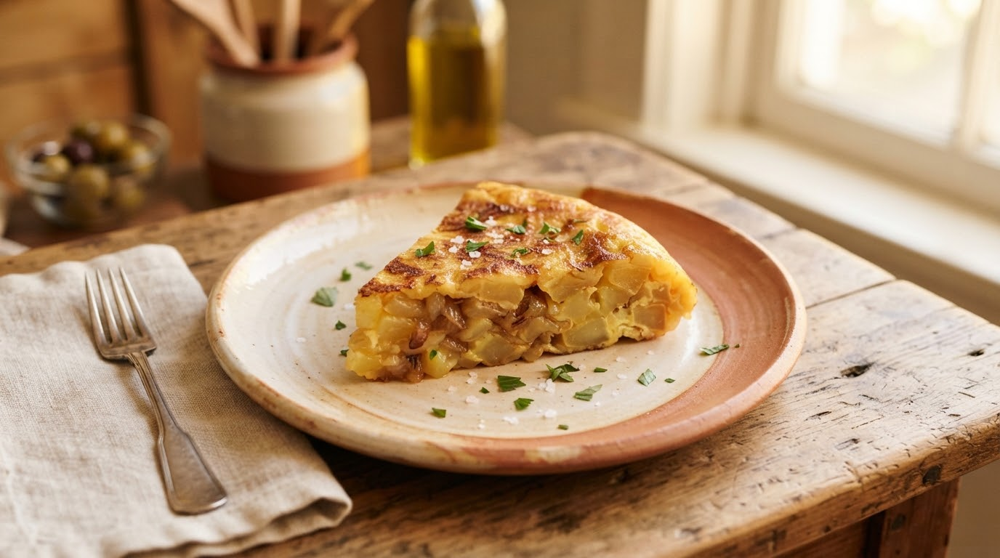
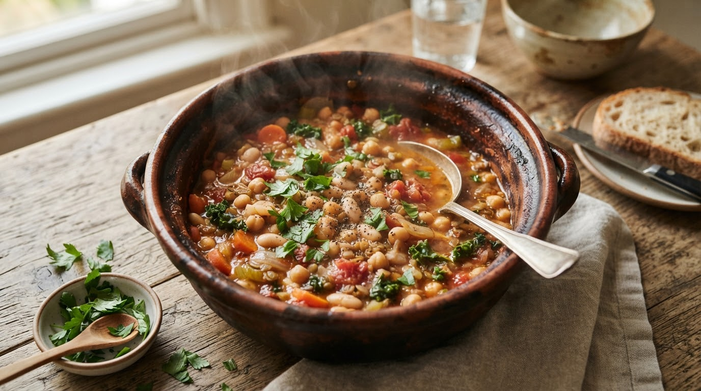

Sazón · bocetos de comparación
Alternativas a la foto del plato
Mismo hueco de imagen (16:10 de las tarjetas, 96×96 de Favoritos, hero 240 del Detalle), misma
receta de ejemplo, distinta fuente de imagen. Colores, radios y tipografías salen de
DESIGN.md y ui/theme/Color.kt.
Qué es fiel y qué no.
- Fiel: tokens y degradados (pares de roles reales de
RecipeAccent), geometría, y las fotos reales del APK en la variante 0. - Aproximado: los glifos de
ui/artworkestán dibujados a mano en Compose; aquí son SVG equivalentes, no idénticos. No es una spec pixel-perfect.
Cambia de tema para ver cómo sobrevive el placeholder.
Foto de la cadena actual
Cadena:
foto de la semilla → foto de CATEGORÍA → default → glifo.
La semilla acierta (1 foto por receta). La receta de IA cae en la foto de su categoría:
ahí está la imprecisión — y de ahí sale la misma imagen repetida en platos distintos.

♥98% coincidenciaTortilla de patatas
Photo de su propia receta semilla.
 ♥92% coincidencia
♥92% coincidenciaArroz con pollo criollo
Receta de IA: no tiene foto; hereda
cat-rice.jpg.
♥88% coincidenciaCurry de garbanzos
Receta de IA: hereda
cat-legume_stew.jpg.Lo que ve el usuario: cuatro recetas de arroz distintas con la misma foto. Ese es el problema 2 que me contabas.
A — glifo por categoría + degradado por cocina
Es lo que la app ya sabe pintar (
recipe-artwork, aceptado) y hoy es solo el último
recurso. La propuesta es cortar el nivel de foto de categoría: la receta de IA cae aquí.
Coste: −3,5 MiB de APK, cero API, cero assets nuevos, cambio puro y testeable.
♥98% coincidencia
Tortilla de patatas
Glifo
egg_breakfast · acento EMBER (española).
♥92% coincidencia
Arroz con pollo criollo
Glifo
rice · acento ROSE (latina).
♥88% coincidencia
Curry de garbanzos
Glifo
legume_stew · acento CURRY (india).Favoritos · 96×96
Arroz con pollo criollo
30 min · Media · 2 pers.
Detalle · hero 240
Arroz con pollo criollo
30 min · Media · 2 pers. · 480 kcal
Hallazgo honesto: dos cocinas distintas pueden caer en degradados casi idénticos
(
ROSE = secondaryContainer→tertiaryContainer y CURRY = lo mismo al revés), y
EMBER (española) es muy beige. Y el glifo solo distingue 18 categorías: dos recetas de
arroz siguen viéndose iguales.
A+ — el mismo glifo + monograma del plato
Truco puro y barato para que dos recetas de la misma categoría no se vean iguales: 1–2 letras del
título. Sin assets, sin red, determinista (misma receta ⇒ misma imagen, siempre).
TP
♥Tortilla de patatas
AC
♥Arroz con pollo criollo
CG
♥Curry de garbanzos
A++ — glifo + dato verdadero del plato
En vez de un adorno, el hueco muestra algo cierto de esa receta: cuántos ingredientes lleva o
cuáles son. Dos arroces de distinta categoría/cocina ya se distinguen, y nunca se afirma nada falso.
6ingredientes
♥Tortilla de patatas
PolloArrozZanahoria
♥Arroz con pollo criollo
GarbanzosTomateLeche de coco
♥Curry de garbanzos
D — collage de iconos de los ingredientes reales
El hueco pasa a ser una composición de 3 iconos de línea de los ingredientes principales, sobre el
acento de la cocina. La Taxonomía ya guarda un
icon por ingrediente (95), pero la app
no dibuja iconos de ingrediente todavía: hay que crearlos y decidir qué ingredientes son "principales".
Es lo más informativo sin ninguna foto.
Tortilla de patatas
Arroz con pollo criollo
Curry de garbanzos
C — tarjeta tipográfica, sin hueco de imagen
Se elimina la imagen y manda el título + los ingredientes. Imposible que mienta, pero es
cambio de layout (RecipeCard, carrusel, hero del Detalle) y choca con el principio de
DESIGN.md "la comida y las fotos mandan".
Desayuno
Tortilla de patatas
HuevoPatataCebolla
Arroz
Arroz con pollo criollo
PolloArrozZanahoria
Legumbres
Curry de garbanzos
GarbanzosTomateCoco
E — degradado abstracto + etiqueta de categoría
El hueco es un bloque de color con la categoría escrita. Cero ambición visual, pero legible y
coherente; útil como respaldo de emergencia.
Desayuno♥
Tortilla de patatas
Arroz♥
Arroz con pollo criollo
Legumbres♥
Curry de garbanzos
Resumen para decidir
| # | Alternativa | ¿Miente sobre el plato? | Coste | Precisión |
|---|---|---|---|---|
| 0 | Hoy | Sí (foto de categoría en recetas de IA) | 0 | Alta en semilla, baja en IA |
| 1 | A · glifo + degradado | No (no afirma plato) | −3,5 MiB, puro | Categoría (2 de 18) |
| 2 | A+ · glifo + monograma | No | Puro, sin assets | Receta (distingue del mismo tipo) |
| 3 | A++ · glifo + ingredientes | No | Puro, sin assets | Alta: muestra qué lleva |
| 4 | D · collage de iconos | No | Iconos nuevos | Alta: derivada de la receta |
| 5 | C · tipográfica | No | Cambio de layout + capturas | Alta |
| 6 | E · abstracta + etiqueta | No | Puro | Categoría |